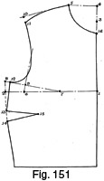
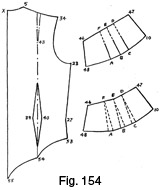
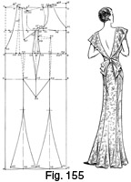
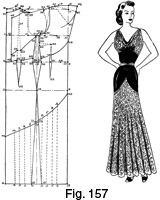
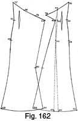
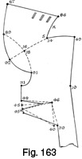

Select any picture to view an enlargement
in a new window
Early 1940's—Ladies' Garment Cutting and Making
by
F. R. Morris
Chapter XII—Evening Gowns
THE adaptation of the standard dress basis system to the cutting of
evening gowns presents no difficulties. Apart from the extra length, not
affecting constructional points, the system for evening gowns is identical
with the basic dress system with modification of ease allowances.
Modern evening gowns are form-fitting and are required to mould to the
figure without any superfluous ease at the waist and hips. Occasionally the
bust is draped loosely by the bodice, but, generally speaking, evening gowns
are mostly cut to show a minimum of fullness or drapery in the bodice.
At the moment, modern evening gown design varies between the Romantic
ideal and the severely Classical line, depending entirely upon the material
in which the gown is made up. For instance, chiffons, organdies, organzas or
similar materials are intended for designs frivolous in character for the
young girl, stressing femininity with wide flaring flounces and frills about
the shoulders and hem line or streamer frills cascading round the skirt from
waist to hem line.
The heavier materials such as satin, crepe, marocain, and the like are
designed on svelte lines, with the slender silhouette always emphasized.
Usually the slender line is carried down the skirt to the knee level, thence
to flare softly to the width at the hem line. Decolletages are alternatively
draped high, cut square or slashed down in a deep V at the front;
occasionally the off-shoulder line is seen. At the back, the decolletage is
invariably cut low to the waist line or, if high, slit to show the back.
A few evening dress designs are shown with sleeves, either close-fitting
to the wrist or with top fullness. The neck line at the front is draped high
about the throat, the back line is low, and a straight, clinging skirt ends
in a slight train.
These are a few of the highlights of evening dress design at the moment,
and, as all designs are evolved from each other, in the following drafts and
designs the author will endeavour to illustrate the basic principles of
cutting evening gowns which show style tendencies calling for detailed
explanation.
As the majority of evening gowns are designed without shoulder covering
except a narrow shoulder strap, it is necessary to eliminate the shoulder
dart from the system to simplify construction when drafting. The elimination
of the shoulder dart does not imply that the need for bust shape in the
bodice is ignored, but, instead, the dart is transferred to the underarm
sideseam and standardized in this position.
There is always need for bust shape in the bodice of a dress, and, to
obtain this shape, the shoulder dart is the most scientific medium; but if
the shoulder is of such a width that a dart is impossible, the required bust
shape must be achieved by other means giving a similar effect to that of the
shoulder dart. The author always prefers the underarm dart for dresses except
in the case of a figure with a very prominent bust; then he uses two darts,
the shoulder dart and an additional dart at the sideseam, giving extra length
over the bust prominence in addition to the shape created by the shoulder
dart. The shoulder dart creates shape, but not length, and, when cutting for
women with abnormal development of the bust, the author has found that the
shoulder dart alone is unsatisfactory, for there is an apparent need for
length as well as shape over the bust. Adding length by increasing the front
shoulder depth does not meet the demands of the figure shape, and so a
sideseam dart, formed by adding a quantity of extra length at the hem line,
must be taken out.
After this divergence from the subject, to eliminate the shoulder dart and
subsequent transfer to the sideseam examine Fig. 150 (a).
Fig. 150 (a) illustrates the bodice front as drafted by the basic system
for dresses, showing the shoulder construction incorporating a dart from the
shoulder to the bust for bust-shape provision.
Based upon a 36-inch bust girth, the constructional points are found in
the following manner—
Square from 1 which represents the centre front at the breast
line.
2 from 1 = one-fourth of the bust girth plus ½ inch.
Square up from 1 to 3 one-third of the scale (18 inches) plus 1½
inches.
4 from 3 = one-twelfth of the scale.
Square out from 4 to 5 one-sixth of the scale.
6 from 1 = the across-chest measure = one-fourth of the scale less 1
inch.
7 from 6 = one-sixth of the scale less ¼ inch.
8 from 7 = the distance from 1 to 4 less ½ inch.
Join the construction line from 8 to 9 to the back shoulder point as
described in the basis dress system and make the distance from 8 to 9 equal
to the width of the back shoulder seam less ¼ inch.
10 from 9 = 1 inch. Shape the front shoulder seam from 10 to 8.
Shape the front of the scye from 10 to 2, hollowing ¼ inch in advance
of the line squared up from 6.
11 is midway of 1 to 6.
Join 8 to 11 and continue down 2 inches to 12.
13 from 8 = the width of the bust dart = 8 to 5.
Join 13 to 12 to complete the shape of the shoulder dart.
14 from 2 for the position of the sideseam bust dart = one-sixth of the
scale = 3 inches.
Join 14 to 12 for preliminary construction.
15 from 4 = one-sixth of the scale. Shape the neck curve from 15 to
5.
The draft of the front bodice is now completed, and to reconstruct the
shoulder section without the dart, cut through from 14 to 12 and from 8 and
13 to the same point.
Fig. 150 (b) illustrates the procedure adopted for obtaining an underarm
sideseam dart. After the pattern has been cut through from 13 and 8 to 12 and
from 14 to 12, eliminate the shoulder dart by closing 13 to 8 to open the
line from 14 to 12. The solid lines from 5 to 8, 10, 2, and 14A show the
reconstructed bodice shape. From 14 to 14A is the quantity to be reduced from
the sideseams in the dart from 14 and 14A to 16. This dart is made from 3 to
4 inches in length, varying according to the quantity taken out of the dart.
As the shoulder dart is closed out from 13 to 8, there is a loss of
across-chest width at it of approximately ½ inch, or the width apart of
the
bust dart lines at this point, which brings points 6 and 7 nearer to the
centre front. But as the actual across-chest width is smaller than a similar
measure taken over the bust, the reduction is correct in the cutting of a
shoulder section without the shoulder dart. The neck-point construction line
from 7 coincides with the position of the front neck point at 5. Therefore,
to reconstruct the shoulder section without a shoulder dart, we must embody
the shape of the reconstructed shoulder by system direct, without
manipulation. To do this, it is necessary to estimate the quantity to be
taken from the sideseam dart and to construct the shoulder section in its
closed-out shape as illustrated by the solid lines of Fig. 150 (b).
Reconstruction Draft of the
Shoulder Section (Fig. 151)
Fig. 151 illustrates the standard shoulder construction for the drafting
of evening-dress patterns. It will be seen that the construction line finding
the neck point from the one-sixth of scale position in advance of the front
of the scye is eliminated from the draft.
Square from point 1 at the centre front.
2 from 1 = one-fourth of the bust measure plus ½ inch, the usual side
seam position.
3 squared up from 1 = one-third of the scale plus 1¼ inches.
4 from 3 = one-twelfth of the scale.
Square out from 4 to 5 one-sixth of the scale.
6 from 1 = the across-chest width = one-fourth of the bust measure less
1¼ inches.
A reduction of ¼ inch takes place to make up for the quantity lost
when the bust dart is closed out at point 11 in Fig. 150 (b).
7 is midway of 1 to 6.
8 from 2 = the estimated quantity to be taken from the sideseam bust
dart by closing out the shoulder dart. This quantity is calculated as
one-twelfth of the scale less ½ inch.
Join 7 to 8 as shown.
Pivoting from 7, sweep from 6 to locate point 9 on the line from 7 to
8.
Join 5 to the back shoulder end in the usual manner to find the front
shoulder slope.
10 from 5 = the back shoulder width less ¼ inch.
11 from 10 = ½ inch. Shape the front shoulder seam from 11 to 5.
12 from 8 = ½ inch. Shape the front of the scye as shown, hollowing
¼ inch in advance of the line squared up from 9.
13 from 12 = one-sixth of the scale.
Shape from 12 to 13.
14 from 13 = the quantity taken from the bust dart as indicated by 2 to
8.
Shape out the sideseam bust dart to 15 3½ inches in length to
complete the bodice draft.
The shoulder construction as described will be incorporated in all the
evening-gown drafts, unless the shoulder design shows a dart, in which case
the standard basis system must be utilized.
In the successful cutting of evening dresses there is the need for
specialized knowledge of cutting to a finished measure without ease or
fullness. The allowance of ease over the half-bust measure usually allowed
for dresses is reduced by ½ inch, for evening dresses must always fit
snugly round the edges of the decolletage. Waist suppression is reduced to
practically the net measure, and a sideseam opening is provided for the
wearer to get into the dress. Whenever possible, an all-round waist seam
should be incorporated in the draft to achieve a perfectly fitting waist
without the disadvantages of surplus material at the back waist hollow.
For the construction of the basic draft, the following proportionate
measures, in this case based on a 36-inch bust girth, are necessary—
Chest = 34 inches.
Bust = 36 inches.
Waist = 27 inches, increased by 2 inches for ease.
Hips = 39 inches.
Natural waist length = 14½ inches.
Full dress length = 52 inches.
Half-back width = 6½ inches.
Working scale = half the bust girth for all sizes under 36 inches and
one-third of the bust girth plus 6 inches for all sizes over 36 inches.
Scale = 18 inches for a 36-inch bust girth.
To draft—
Commence by drawing line X to X, the full dress length.
1 from X = one-third of the scale plus 1½ inches.
2 from X = the natural waist length.
3 from 2 = the hip level = 8 inches down from the waist line.
Square out from the above points.
4 from X = the back neck width = one-sixth of the scale less ¼
inch.
5 from 4 = the back neck height = ¾ inch. Shape from 5 to X.
6 from 1 = the half-back width. Square up from 6 to 7 on the
construction line squared out from X.
8 from 3 on the hip balance line = half the hip measure net.
Square up and down from 8 to locate points 9, 10, 11 and 12.
13 from 11 = one-twelfth of the scale.
Square back from 13 to 14 one-sixth of the scale.
The sideseam is located at 15, half the distance from 3 to 8.
Square up and down from 15 to 16, 17 and 18 at the hem line.
Overlap the sideseams at 19 and 20 from 18 1½ inches each side.
Join 20 and 19 to 15 for the sideseam outline runs.
Measure up from 10 to 21 half the bust measure plus ½ inch.
Reduce the surplus quantity shown by 1 to 21 from the sideseams at 22
and 23 to 17 equally.
24 from 10 = half the scale less 1¼ inches.
25 is midway of 10 to 24.
Square up from 22 to 26 one-twelfth of the scale less ½ inch.
By pivoting from 25, sweep from 24 to 27 on the line joining 25 to
26.
28 from 26 = ½ inch.
The back shoulder slope from 7 to 29 = 1 inch.
30 from 29 = ¼ inch. Shape the back shoulder seam from 30 to 5.
Join 14 to 30 as shown.
31 from 14 = the width of the back shoulder seam from 30 to 5 less ¼
inch.
32 from 31 = ½ inch. Shape the front shoulder seam from 32 to 14.
Shape the front-scye from 32 to 28, hollowing ¼ inch in advance of the
line from 27.
Shape the back-scye from 23 to 30.
Square down from 22 and 23 to 33 and 34 on the waist line.
Suppress the sideseams at 33 and 34 to 35 and 36 by ½ inch in each
instance.
Measure down from 28 to 37 one-sixth of the scale for the position of
the sideseam bust dart.
38 from 37 = the quantity taken from the bust dart, equal to the
distance from 22 to 26.
Shape out the dart, as shown, 3½ inches in length.
Measure up from 2 to 39 half the waist measure (29 inches).
40 from 39 = the distance from 35 to 36.
The back waist suppression takes two-thirds of the surplus shown from 40
to 41.
The front waist suppression takes the remaining third of the surplus
from 41 to 9.
Mark out the back waist suppression from 2 to 42 by one-sixth of the
scale plus ½ inch. This distance is comparative and varies with different
designs in its position.
43 from 42 = the back waist suppression as decided by the distance from
40 to 41.
44 from 3 = the distance from 2 to 42 plus ½ inch.
The centre of the back shoulder seam is located at 45.
The shoulder-strap width for all evening dresses is decided at this
stage and the width is divided equally each side of this point.
Mark out the back waist suppression from 42 and 43 to 45, terminating
the suppression at point 46, level with the shoulder blade.
The waist suppression lines from 42 and 43 are mainly utilized to
reduce the back bodice width at the top edge to measure and the need for
closing out the back waist suppression only extends to the same edge of the
back decolletage.
The front waist suppression is indicated by point 47, one-sixth of the
scale plus ½ inch from 9. Again this distance is comparative and subject to
the demands of fashion.
48 from 47 = the front waist suppression, as indicated from 41 to 9.
Mark out the waist suppression in the form of a dart to 49 7 inches from
points 47 and 48.
50 from 48 and 47 = 4 inches. Shape out the waist suppression as
shown.
This completes the basic draft for evening-dress patterns.
The dinner dress design illustrated by Fig. 153 has interesting treatment
of the bodice with a brassiere effect over the bust to give fullness, shaped
yoke seams over the hips at back and front to keep the hip line slim, and a
moderately straight skirt effect.
Long sleeves are shown, darted to give width and fullness at the shoulders
and tapering to a close fit at the wrist.
This design would be very successful carried out in lace over satin, crepe
or similar plain contrasting materials.
The draft is arranged to the following measures—
Chest = 34 inches.
Bust = 36 inches.
Waist = 27 inches, increased to 29 inches for the draft.
Hips = 39 inches.
Natural waist length = 14½ inches.
Full dress length = 52 inches.
Working scale = one-third of the bust girth plus 6 inches = 18
inches.
To draft—
Commence by drawing line from X to X, the full dress length, i.e. 52
inches.
1 from X = one-third of the scale plus 1½ inches.
2 from X = the natural waist length =14½ inches.
3 from 2 = the hip level = 8 inches down from the natural waist
line.
Square out from the above numbered points.
4 from X = one-sixth of the scale less ¼ inch.
5 from 4 = ¾ inch. Shape the back neck curve from 5 to X.
6 from 1 = the normal half-back width = 6½ inches.
Square up from 6 to 7 on the construction line squared out from X.
The marking-out of the half-back width and back neck curve is
necessary for the correct location of the shoulder straps.
8 from 3 = half the hip measure net.
Square up and down from 8 to locate points 9, 10, 11 and 12 at the hem
line.
13 from 11 = one-twelfth of the scale.
14 from 13 = one-sixth of the scale.
The sideseams are located at point 15, half the distance from 3 to
8.
Square up and down from 15 to locate points 16, 17 and 18 at the hem
line.
19 from 18 = 1½ inches.
20 from 18 = 1½ inches.
Join 19 and 20 to 15 for the sideseam overlap.
Measure from 10 to 21 half the bust measurement plus ½ inch.
The surplus quantity shown from 21 to 1 is reduced at the sideseam from
17 to 22 and 23 equally.
Square down from 22 and 23 to 25 and 24 on the waist line.
Suppress the front sideseam from 24 to 26 by ½ inch.
Suppress the back sideseam from 25 to 27 by ½ inch.
Shape the sideseams from 22 and 27 to 15 and from 23 and 26 to 15.
The across-chest width from 10 to 28 = half the scale less 1¼
inches.
29 is midway of 10 to 28.
30 from 23 on the continuation of the construction line from 23 and 24 =
one-twelfth of the scale less ½ inch.
Join 29 to 30.
By pivoting from 29, sweep from 28 to locate point 31 on the line from
29 to 30.
32 from 30 = ½ inch.
Shape from 32 into the sideseam run from 23 to 26.
33 from 7 on the line from 7 to 6 = 1 inch.
34 from 33 = ¼ inch. Shape the back shoulder seam from 34 to 5.
Join 14 to 34.
35 from 14 = the front shoulder width equal to the width of the back
shoulder from 5 to 34 less ¼ inch.
36 from 35 = ½ inch.
Shape the front shoulder seam from 36 to 14.
Shape the front scye from 36 to 32, hollowing ¼ inch in advance of the
line from 31.
Measure from 2 to 37 half the waist measure plus the distance from 27 to
26.
The back waist suppression takes two-thirds of the surplus shown from 37
to 9, and the front waist suppression takes the remaining third as shown from
38 to 9.
The width of the back panels apart is decided as 6 inches at the
waist line, and therefore from 2 to 39 = 3 inches, or for larger or smaller
bust sizes, one-sixth of the scale.
40 from 39 = the back waist suppression.
39 is 4 inches from 2.
41 is 5 inches from 3.
Square down from 41 to 42 on the hem line.
44 is 2½ inches from 5 on the shoulder seam.
Shape out the back waist dart from 39 and 40 to 41 and from 39 and 40 to
44, terminating the dart at 43, 4 inches above the bust line.
45 from 26 = the front waist suppression quantity shown from 38 to
9.
The front waist suppression is taken out at the sideseam as there is no
waist seam across the front waist that suppression can be taken out on.
46 from 32 = 3 inches for the commencement of the bust seam running up
into the neck line.
Shape out the bust seam and neck run, making 47 from 10 equal to 4
inches at an angle of 45 degrees.
48 from 46 = 4 inches.
49 from 48 = the bust dart quantity shown from 23 to 30.
Shape out the waist seam from 49 across to 10 as illustrated.
Point A is 6 inches for the position of the first bust dart.
B is 1½ inches from A, C is 1½ inches from B.
50 is 1 inch below 8.
52 is 3 inches below 45.
Join 52 to 50 and make 51 midway. Shape out the hip yoke seam as
illustrated.
53 is the same as 52 down from the waist line.
55 from 3 = 1 inch. Shape the hip yoke seam across from 55 to 54 and 53,
making the shape of the seam identical with the front yoke seam.
Cut through the waist line from 2 to 27, and then manipulate the waist
suppression by closing point 39 to 40 by pivoting from 43 and from 39 to 40
by pivoting from point 41, to open out the skirt hem width at 42.
56 from 18 = 5 inches.
57 from 18 = 5 inches. Shape out the sideseams from 56 to 15 and 57 to
15.
This completes the draft of the dress.
Manipulation of the Back and Bodice Patterns
(Fig. 154)
Fig. 154 illustrates the manipulation of the back and bodice patterns
in order to allow for darts or gathers over the bust in the bodice and
suppression at the back waist in a dart.
Cut round the back pattern from X to 5, 34, 23, 27, 53, 54 and 55. Then
close the waist suppression lines together at 54, pivoting from 43, this
operation reducing the waist suppression at 39 to 40, which is taken out in a
dart 8 inches in length as marked. Alternatively the suppression quantity can
be taken out in two smaller darts so as to spread the effect more equally
across the back waist.
Cut round the bodice pattern from 47 to 10, 48 and 46. Then mark up the
dart lines at A, B and C to D, E and F. Cut through these dart lines and then
wedge the pattern open at A, B and C to D, E and F, opening out each dart ½
to 1 inch, depending on the amount of fullness required over the bust.
The fullness may be either reduced in the form of small tucks or gathered
smoothly at the centre of the panel seam between 48 to 10 from A to C.
Evening Dress with Flared Shoulder
Flounces (Fig. 155)
The design illustrated by the draft has interest in the low skirt flare
and the shoulder flounce flared to fall in soft folds over the shoulders from
the low front V neck line to run down the edge of the deep V opening to the
back waist. The bodice front is perfectly plain in cut from the waist line to
the shoulders; at the back the bodice is cut away at the back of the armhole
under the shoulder flounce. A seam is placed through the waist from front to
back to facilitate the fitting of the dress. The sideseam ends at a point
below the hip level and, from this point, is eliminated, and the skirt is cut
in four sections with panel seams at the side, front and back.
Measures for the draft are as follows—
Chest = 32 inches.
Bust = 34 inches.
Waist = 25 inches, increased to 27 inches for the draft.
Hips = 38 inches.
Natural waist length = 14½ inches.
Full dress length = 53 inches.
Working scale = half the bust girth =17 inches.
To draft—
Commence by drawing a line from X to X, the full dress length, i.e. 53
inches.
1 from X = the back depth = one-third of the scale plus 1½
inches.
2 from X = the natural waist length = 14½ inches.
3 from 2 = the hip level = 8 inches down from the waist line.
4 from X = one-sixth of the scale less ¼ inch.
5 from 4 = ¾ inch. Shape the back neck curve from 5 to X.
6 from 1 = the normal half-back width = 6¼ inches.
Square up from 6 to 7 on the construction line squared out from X.
8 from 3 = half the hip measure net.
Square up and down from 8 to locate points 9, 10, 11 and 12 at the hem
line.
13 from 11 = one-twelfth of the scale.
14 from 13 = one-sixth of the scale.
The sideseam is located at 15, half the distance from 3 to 8.
Square up from 15 to 16 and 17.
Measure up from 10 to 18 half the bust measure plus ½ inch. Reduce the
surplus from the sideseams at 17 to 19 and 20, divided equally each side of
point 17.
Square down from 19 and 20 to 21 and 22 on the waist line.
Suppress the front sideseam at the waist from 22 to 23 by ½ inch.
Suppress the back sideseam from 21 to 24 by ½ inch.
Shape-the sideseams from 19 to 24 and 15 and from 20 to 23 and 15.
The across-chest width from 10 to 25 = half the scale less 1¼
inches.
26 is midway of 10 to 25.
27 from 17 on the line squared up from 20 = one-twelfth of the scale
less ½ inch.
Pivoting from 26, sweep from 25 to 28 on the line joining 26 to 27.
29 from 7 = 1 inch.
30 from 29 = ¼ inch. Shape the back shoulder seam from 30 to 5.
Join 14 to 30.
31 from 14 = the front shoulder width equal to the width of the back
shoulder from 30 to 5 less ¼ inch.
32 from 31 = ½ inch. Shape the front shoulder seam from 32 to 14.
33 from 27 = ½ inch. Shape the sideseam from 33 to the line from 20 to
23.
Measure from 2 to 33A half the waist measure plus the distance from 23
to 24.
The back waist suppression takes up two-thirds of the surplus quantity
from 33A to 9.
The front waist suppression takes up the remaining one-third of the
surplus as indicated by 34 to 9.
Square down from 15 to 35 6 inches for the shape of the centre of the
sideseam inset panel.
36 from 15 = 4 inches.
37 from 15 = 4 inches.
Square down from 36 to 38.
Square down from 37 to 39.
40 from 38 = 4 inches.
41 from 38 = 4 inches. Shape the skirt flare as shown, commencing from a
point on the line from 36 to 38, 9 inches below the hip level.
42 from 39 = 4 inches.
43 from 39 = 4 inches. Shape the skirt flare as shown, commencing from a
point 9 inches below the hip level on the line from 37 to 39.
Square up from 37 to 44. Reduce equally each side of point 44 the back
waist suppression quantity derived from 33A to 34.
Square up from 36 to 45 and reduce equally each side of this point the
front waist suppression quantity as indicated from 34 to 9.
Continue the waist suppression up to 46, 4½ inches from 45.
47 from 33 = one-sixth of the scale.
Mark out the sideseam dart from 47 to 48 equal to the distance 27 is
from 20.
Shape out the bust dart to terminate at 46.
49 from 2 = one-sixth of the scale.
50 from 49 = the back waist suppression as indicated from 33A to 34.
51 is midway of 5 to 30 for the centre of the shoulder strap.
Join 50 to 52 and shape out the back waist suppression from 49 to
terminate on the line from 50 to 51 at 52, the blade level.
Make the shoulder strap 1½ inches in width and divide the width
equally each side of point 51 to 53 and 54.
55 from 2 = 2 inches. Shape the back opening from 55 to 53 as shown,
hollowing the seam ½ inch.
56 from 19 = ½ inch.
57 from 56 = 4 inches. Shape from 56 to 57 and from 57 to 54 in the
manner indicated.
58 is midway between 14 and 32 in the front shoulder for the position of
the front shoulder strap.
59 and 60 from 58 constitute the width of the back shoulder strap from
53 to 54.
Shape the front of the armhole from 60 to ½ inch below point 33 to
agree with the shape of the back side-seam at 56.
The front neck opening from 59 to 61 is made 8 ½ inches in length.
Shape from 61 to 59 to complete the dress draft.
The manipulation of the pattern is as follows—
Cut through the waist line from 9 at the front to 2 at the centre back.
The back section of the bodice is cut through from 49 and 50 to 52 and from
the centre of the shoulder at 51 down to 52. Close out the back waist
suppression by closing 49 to 50, pivoting from point 52. Re-shape the
shoulder-strap width to the required size after the shoulder has opened with
the suppression closed out. On the back section of the skirt, close out the
back waist suppression at 44 and re-shape the skirt section from 2 to 44, 24
and 35. Similarly, close out the front waist suppression at the front skirt
from 45 to 36 and re-shape the skirt section as 9 to 45, 23 and 15.
The front bodice section is manipulated by closing out the front waist
suppression at 45, pivoting from 46 to open the bust dart from 47 and 48 to
46. Remark the bust dart 3½ inches in length from 47 and 48 to 46.
The flared shoulder flounce is cut by taking the back and front bodice
sections and laying the back and front shoulder seams together from 30 to 32
and 50 to 53. Shape the flounce from 61 to 55 as indicated, making the width
over the shoulders to taste; in the draft the width is 9 inches.
Cut out the flounce in pattern paper and mark four manipulation lines from
1, 2, 3, and 4 to 5, 6, 7 and 8, each manipulation line being 3 to 4 inches
apart.
Mark round the flounce pattern from 61 to 1 and 5, then cut through the
line from 5 to 1 and insert a 1½-inch wedge from 5 to 9, pivoting from
1.
Mark from 1 and 9 to 6 and 2 the shape of the original flounce pattern, then
cut through the line from 6 to 2 and insert a 1½-inch wedge from 6 to
10,
pivoting from 2. Mark from 2 to 3 and 10 to 7 the shape of the original
flounce from 6 to 7 and 2 to 3. Similarly insert 1½ inches of flare at
7
to 11 and 8 to 12 and mark round the reconstructed shape of the flounce.
Evening Dress with a "Cowl" Neck
Line (Fig. 157)
The "cowl" neck line is always a fashionable addition to an
evening dress, and is very flattering to every type of figure. There are a
variety of "cowl" neck lines, e.g. plain, high, or draped to one
side.
For the example given a plain, deep "cowl" is chosen, emanating
from a high curving waist seam. The back of the dress has a novel treatment
with a centre strap from a band round the back neck, while the sides of the
bodice at the back are cut away from under the arms. The waist is confined to
the figure by darts back and front, while the skirt is flared widely from a
seam running from the centre front to a low point at the centre back.
The measures for the draft are as follows—
Chest = 30 inches.
Bust = 32 inches.
Waist = 25 inches, plus 2 inches always for ease.
Hips = 35 inches.
Natural waist length = 14½ inches.
Full dress length = 52 inches.
Working scale = half the bust girth = 16 inches.
To draft—
Commence by drawing line from X to X, the full dress length.
1 from X = the back depth = one-third of the scale plus 1½
inches.
2 from X = the natural waist length = 14½ inches.
3 from 2 = the hip level = 8 inches below the waist line.
4 from X = the back neck width = one-sixth of the scale less ¼
inch.
5 from 4 = ¾ inch. Shape the back neck curve from 5 to X.
6 from 1 = the half-back width = 6¼ inches.
Square up from 6 to 7 on the line squared out from X.
8 from 3 = the half-hip measure net. Square up and down from 8 to 9, 10,
11 and 12.
13 from 11 = one-twelfth of the scale.
14 squared back from 13 = one-sixth of the scale.
The sideseam is located at 15, half the distance from 3 to 8.
Square up from 15 to 16 and 17 and down to the hem line. Overlap the
front and back sideseams 1 ½ inches to 18 and 19 from the construction line
squared down from 15.
Measure from 10 to 20 half the bust measure plus ½ inch. Reduce the
surplus quantity shown from 1 to 20 at the sideseam from 17 to 21 and 22.
Square down from 21 and 22 to 24 and 23 on the waist line.
Suppress the sideseams ½ inch from 24 to 25 and from 23 to 26.
27 from 10 = half the scale less 1 ¼ inches.
28 is half 10 to 27.
29 from 22 on the line squared up from 22 and 23 = one-twelfth of the
scale less ½ inch.
Join 28 to 29.
Sweep from 27 to 30, pivoting from 28. Square up from 30 for the front
scye line.
31 from 29 = ½ inch. Shape the sideseam from 31 into the seam from 22
to 26.
32 from 7 = 1 inch.
33 from 32 = ¼ inch.
Shape the back shoulder seam from 33 to 5.
Shape the back scye from 21 to 33.
Join 14 to 33.
34 from 14 = the front shoulder width equal to 5 to 33 less ¼
inch.
35 from 34 = ½ inch. Shape the front shoulder seam from 35 to 14.
Measure from 2 to 36 half the waist measure (27 inches) plus the
distance from 25 to 26.
The back waist suppression is indicated by 37 from 36, two-thirds of the
surplus from 36 to 9.
The front waist suppression is the remaining one-third from 37 to 9.
The centre of the back shoulder strap is found at 38, half the distance
from 5 to 33.
The circular shoulder strap is made 1½ inches in width, i.e. ¾ inch
each side of 38 to 39 and 40.
41 from X = 1 inch. Shape from 39 to 41 as shown.
The back panel is made 4 inches in width; therefore, from the centre
line to 42 and from 2 to 43 are made 2 inches in width respectively.
Shape from 40 to 42, making the strap 1½ inches in width.
Shape from 42 to 43.
The centre of the front shoulder strap is located
at 44, half the front shoulder width from 14 to 34.
The length of the neck opening from 45 to 47 = 6 inches.
The high waist seam terminates at point 48, 6 inches up from 9.
49 from 26 = 1 inch.
50 from 25 = 1 inch.
The back waist dart is located at 51, one-sixth of the scale plus ½
inch from 2.
52 from 51 = the back waist suppression as indicated from 36 to 37 at
the front.
Shape out the back dart from 51 and 52 to 53 7 inches in length.
Join 51 to 39 and shape out the back waist suppression from 52 to 54 at
the blade level.
Shape the waist seam from 50 to 2, breaking at 55 and 56 as shown, so
that the dart seams are equal in length from 55 and 56 to 53.
57 from 21 = ½ inch.
58 from 43 = 2 inches. Shape from 57 to 58, breaking at 59 and 60 to
enable the waist suppression to be closed out equally.
61 from 26 = 2½ inches.
Shape out the front waist suppression at 61 to 62 and 63, making the
dart 5 inches in length.
Shape up from 61 to the termination of the bust dart at 63.
64 from 31 = one-sixth of the scale.
65 from 64 = from 22 to 29.
Shape out the bust dart from 64 and 65 to 63.
Pivoting from point 45, sweep the front neck opening length from 45 to
47 to 67, making 48, 45 and 67 a right-angle.
Line through from 48 and 67 to 68 2 inches from 67.
Shape from 68 to 45 for the top edge of the "cowl" neck
line.
The commencement of the skirt seam is at 69, 1 inch below point 8.
70 is 9 inches down from 15 on the line from 15 to the bottom edge.
Square across from 70 to 71 and 72 on the sideseams.
73 from 3 = 12½ inches.
Shape from 69 to 71, hollowing the seam 1 inch from the straight.
Shape from 72 to 73 to complete the dress draft.
A from 69 = 4½ inches.
Mark four manipulation lines from A, B, C and D to the hem line at E, F,
G and H, these lines being 1½ to 2 inches apart.
On the back skirt, M from 73 = 3 inches.
Mark four manipulation lines from M, L, K and J to the hem line at N, O,
P and R. These lines are 1½ to 2 inches apart.
Complete the shape of the back bodice by closing out the back waist
suppression from 56 and 59 to 60 and 55.
Close out the front waist dart at 61 and, by pivoting from 63, open the
bust dart from 64 to 65.
The "cowl" front is cut on the direct bias
of the material
from 48 to 68.
Cut round the front skirt section from 69 to 71 and from 71 to 19 at the
hem line, thence to 12 and back to 69 in Fig. 157. Cut through the lines from
E to A, F to B, G to C and H to D and, by pivoting from points A, B, C, and
D, insert 2 inches of extra width at each of the manipulation lines. Add 2
inches of spring at the sideseam from 19 to 19A from 71 as shown in Fig. 158.
Re-mark round the reconstructed pattern from 69 to 71 and from 12 to 19A. If
an even flare is desired in the skirt, the seam from 69 to 71 should assume a
gradual curve, but, if the skirt is required to hang in definite points of
flare, the seam between the above points should be drafted in a series of
angles instead of an even curve, and then the skirt will show flare at each
of these points only.
Cut out the back skirt section from 72 to 73 and X to 18 in Fig. 157. Cut
through the lines from R to M, P to L, O to K and N to J and insert 2 inches
of extra width at each of the manipulation lines at the hem line as in Fig.
158. Re-mark round the outline of the reconstructed skirt pattern and add 2
inches of sideseam spring from 72 and 18 to 18A.
Skirt flares of this character should always be cut on the direct bias of
the material to ensure their even "hang" or "drape." The
straight edge from 12 to 69 should be placed to the fold of the bias edge.
Similarly, from 73 to X is placed to the bias fold when cutting out.
Fig. 159 shows an evening-cum-dinner dress that can be worn on any formal
or informal occasion. The sleeves make it adaptable for use for cinema wear
without being out of place.
The bodice of the dress has buttons down the front from the neck opening
to waist and is fitted very closely to the figure. This accentuates the
appearance of the very fully flared and panelled skirt. The skirt is cut with
six gores so that a close fit is retained over the hip line in contrast to
the very full hem.
The sleeves are short (or may be full length) and pleated into the
shoulder. It is advisable to keep the shoulder seam on the narrow side so
that the sleeves stand well up from the shoulders and accentuate their square
appearance.
Measurements for the draft are as follows—
Chest = 33 inches.
Bust = 35 inches.
Hips = 37 inches.
Natural waist length = 15½ inches.
Full dress length = 60 inches.
Working scale = half the bust measurement 17½ inches.
THE BODICE DRAFT
To draft—
Commence from X.
1 from X = the depth of scye, one-third of scale plus 1½ inches.
2 from X = the natural waist length 15½ inches.
Square out from 1, 2 and X.
3 from 1 = half the bust measurement plus 1½ inches.
½ inch extra has been added over the bust measurement as the
garment has sleeves and a very close fit round the bust is not so essential
as in the case of a sleeveless evening dress.
4 from 3 = one-fourth of the bust measurement less 1 inch.
5 from X = one-sixth of the scale less ¼ inch for the back neck
width.
Square up ¾ inch from 5 to 6.
Shape the back neck run from 6 to X.
7 from X for the back shoulder slope = 1 inch.
Square out from 7 to 8, the half back width 6½ inches.
9 from 8 = ½ inch. Shape the back shoulder slope from 9 to 6.
Square down from 8 to 10. 11 from 4 = one-sixth of scale.
Square up from 11 to 12, equal to the back depth plus one-twelfth of
scale less ½ inch.
13 from 3 = from 11 to 12 plus ½ inch.
14 from 13 = one-sixth of scale.
Join point 12 to 9 and then measure the width of the back shoulder seam
from 9 to 6 and apply this quantity less ½ inch from 12 to 15 for the width
of the front shoulder seam.
16 is 1 inch below 15. Shape the front shoulder seam as shown.
Shape the scye as shown to complete the draft of the shoulder part. 17
is midway 1 to 3 for the position of the sideseam.
Square down from 17 to 18 on the waist line.
19 and 20 are each ½ inch from 18. Measure back from the centre front
line to 21 less the distance from 19 to 20 and make this quantity half the
waist measurement plus 1 inch for ease.
22 from 21 = two-thirds of the suppression quantity shown from 21 to 2.
This amount is taken out of the back waist and the remainder out of the front
waist suppression.
23 is 3 inches from the centre line for the position of the front waist
dart.
24 from 23 = the front waist suppression as shown from 22 to 2.
25 from the centre line is 3½ inches and 2½ inches below
the bust
line.
26 from 14 = 2 inches.
27 from 26 = the quantity of bust dart shown from 12 to 14.
Shape the front panel seam and bust dart as shown.
The back waist suppression is taken out in two darts in the positions
marked at the back waist, making the edge of the first dart 2½ inches from
the centre back line.
30 from 14 = 4½ inches.
31 from 13 = 6 inches.
33 is ½ inch below 32. Shape from 33 to the sideseam at 19 for the
waist seam run.
34 from 32 = 1¼ inches.
35 from 3 = 1¼ inches. Shape the front edge and neck run as
illustrated to complete the draft of the bodice.
THE SKIRT DRAFT
To draft—
Square from X.
1 from X = 8 inches down for the hip line.
Square out from 1 to 2 = half the hip measurement net.
Square up from 2 to 3 to intersect the line squared out from X.
4 is midway 1 to 2.
Square up from 4 to 5.
Square down from X to 6, the full skirt length.
Square down from 3 to 7, the full skirt length.
Measure out from 3 to 8 = half the waist measurement plus 1 inch.
9 from 8 = one-third of the distance from 8 to X.
10 from 9 = two-thirds of the distance from 9 to X.
11 from 1 on the hip line = 3½ inches.
12 from 2 = 3½ inches.
Shape out the sideseam suppression indicated from 8 to 9 at 13 and 14
from 5.
Shape out the front waist quantity at 16 = to 10 to X.
Square down from 11, 4 and 12 to 17 and 18 and 19.
Add 6 inches of flare on each panel seam, commencing from the hip level
to complete the draft of the skirt.
To draft the sleeve, measurements for the scye are as follows—
Height of back sleeve pitch from breast line = 3¾ inches.
Height of sleeve crown = 1¼ inches.
Width of the top scye between the pitches = 9 inches.
To draft—
Commence from X.
1 from X = the depth of the pitch less ½ inch, 3¼ inches.
2 from 1 = ½ inch.
3 from 2, diagonally = the top scye circumference less ½ inch.
4 from 3 = one-third of the distance from 2 to 3 plus ¾ inch.
5 from 4 = the crown height of 1¼ inches.
6 is midway 4 to X.
Shape the sleeve head from 1 to 6, 5 and 3 as shown.
Measure round the under scye from the front pitch A to the top of the
sideseam at 17 and apply this quantity from 1 to 7.
Measure round the under scye from B to the top of the back sideseam at
17 and apply this quantity direct from 3 to 8.
Square down from 8 to 9 and 7 to 10 the undersleeve length as
desired.
11 from 10 = 1 inch. These two quantities may be increased if a
closer-fitting sleeve is required.
Square down from 12 to 13 and 11 to 14, a distance of 4 inches for the
sleeve cuff turnup.
Shape out the underarm seams of the sleeve as shown.
Sleeve Manipulation
(Fig. 160 (B))
Fig. 160 (B) shows how to obtain the sleeve head fullness necessary to
form the pleats.
Fold the sleeve part down the centre and then sweep out from point A to B
a distance of 2 inches.
Join C to B at the cuff and then make D from C equal to 2 inches.
E from B = 1 inch to keep the square of the centre line of the sleeve in
relation to the cuff.
Measure across from G to H at the sleeve length finished position, and
then make from E to F equal to this quantity, so that when the sleeve cuff is
turned up it will lie fairly without distortion.
Shape the reconstructed sleeve head, making J from A 1½ inches and K
from J ½ inch.
The sleeve may either be pleated or gathered into the armhole, and if
pleated four pleats should be taken out with about 1½ inches in each
pleat.
Dress with a Shoulder Cape, showing
Treatment of Uneven Skirt Design (Fig. 161)
The dress depicted by Fig. 161 illustrates the drafting of patterns to
designs when the line is not the same each side of the skirt and bodice. It
is necessary to trace off from the draft a duplicate side and mark the design
on the whole back or front.
The design illustrated has many points of style worthy of close attention.
The centre seam of the fronts develops into a very high "cowl" neck
line at the base of the throat, while at the hem it is slit up a distance of
14 inches for a split-skirt effect. At the back across the shoulders the
front "cowl" becomes a shoulder capelet, fastening with three
buttons and holes.
The skirt design shows a seam running from each sideseam to cross at the
natural waist and overlap in the manner indicated, diverging back to the
centre of the skirt and forming a low flare to the hem line. Panel seams
traverse the front skirt from the side-seams above the waist to the centre,
thence flare down towards the hem line from the knee level.
Measurements for the draft are as follows—
Chest = 34 inches.
Bust = 36 inches.
Waist = 27 inches.
Hips = 39 inches.
Natural waist length = 15 inches.
Full dress length = 52 inches.
Working scale = one-third of the bust girth plus 6 inches = 18
inches.
To draft—
Commence by drawing a line from X to X, the full dress length, i.e. 52
inches.
1 from X = the back depth = one-third of the scale plus 1½
inches.
2 from X = the natural waist length = 15 inches.
3 from 2 = the hip level = 8 inches below the waist line.
Square out from the above points.
4 from X = the back neck width = one-sixth of the scale less ¼
inch.
5 from 4 = the height of the back neck curve, ¾ inch.
Shape from 5 to X for the back neck curve.
6 from 1 = the normal half-back width = 6½ inches.
Square up from 6 to 7 on the line squared out from X.
Square out from 3 to 8 half the hip measure applied net.
Square up and down from 8 to 9, 10, 11 and 12 at the hem line.
13 from 11 = one-twelfth of the scale.
14 squared back from 13 = one-sixth of the scale.
15 from 7 on the line from 7 to 6 = 1 inch.
Square out from 15 to 16.
16 from 15 = ¼ inch. Shape the back shoulder seam from 16 to 5.
Join 14 to 16.
17 from 14 = the front shoulder width = 5 to 16 less ¼ inch.
18 down from 17 = ½ inch. Shape the front shoulder seam from 18 to
14.
The sideseam is located at 19, half the hip measure from 8.
Square up and down from 19 to 20, 21 and 22 at the hem line.
23 from 22 = 1½ inches.
24 from 22 = 1½ inches.
Join 23 and 24 to the hip point 19 for the sideseam overlap.
Measure from 1 to 25 half the bust measurement, plus ½ inch.
Reduce the surplus shown between 10 and 25 from the sideseam at 21.
26 from 21 = half 10 to 25.
27 from 21 = half 10 to 25.
28 from 10 = one-fourth of the bust measure less 1¼ inches.
29 is half 10 to 28.
30 squared up from 27 = one-twelfth of the scale less ½ inch.
By pivoting from 29, sweep from 28 to 31 on the line joining 29 to
30.
Shape the front of the scye from 18 to ¼ inch in advance of the line
squared up from 31 to finish at the front sideseam ½ inch in advance of
point 30.
Square down from 27 to 32 and 26 to 33.
34 from 32 = the front sideseam waist suppression.
35 from 33 = the back sideseam waist suppression.
Shape the sideseams from 26 to 35 and 19 and from 27 to 34 and 19.
Measure from 2 to 37 half the waist measure (27 inches increased to 29
inches for ease) plus the distance from 34 to 35.
The back waist suppression is calculated as two-thirds of the surplus
from 37 to 9.
The front waist suppression takes the remaining third of surplus from 38
to 9.
Mark the front panel seams as follows—
39 from 9 = one-sixth of the scale plus ¼ inch = 3¼ inches.
40 from 39 = the front waist suppression as indicated by the quantity at
38 to 9.
41 from 34 = 4½ inches for the commencement of the front panel seam
at the sideseam.
42 from 8 = the distance from 39 to 9 plus ¼ inch.
43 from 12 = 42 to 8 plus ½ inch.
Shape the panel seams from 40 and 39 to 42, and continue the panel
construction line downwards from 42 to 43.
44 from the top of the sideseam at 30 = one-sixth of the scale for the
position of the bust dart.
45 from 44 = the quantity taken from the bust dart as indicated by the
distance 30 is from 27.
46 up from 39 and 40 = 4½ inches. Mark out the waist suppression
and
connect up with the sideseam dart from 44 and 45.
47 from 14 = the size of the front neck opening = 6 inches.
By pivoting from 14, sweep the neck opening length up from 47 to 48,
making 14, 48 and 10 a right-angle.
49 from 48 = 1½ inches for the turn-back of the "cowl" neck
line.
Shape from 49 to 14 and from 49 into the centre front seam at 10.
The flare on the front panel seam commences at 50, 10 inches below the
hip level at 42.
52 from 43 = 2 inches.
51 from 43 = 2 inches.
Shape the front panel seams from 42 to 50 and 52 and from 42 to 50 and
51.
The flare on the centre front seam commences at 55, 10 inches down from
8.
Add 1½ inches of flare to 56, and round off the centre front slit
from 56 to the hem line at 43 as shown.
The slit is made 12 inches in length from the hem line as indicated by
point 57.
To produce the cross-over design on the back, it is necessary to
trace off the outline of the back from X to 5, 16, 26, 35, 19, 53 and X at
the hem line.
The traced-off back is indicated by points 58, 59, 60, 61, 62 and 63 at
the hem line.
Mark out the back waist suppression before drafting the design.
64 from 2 = one-sixth of the scale plus ½ inch.
65 from 64 = the back waist suppression equal in quantity to the
distance from 37 to 38.
66 from 3 = ½ inch more than the distance from 2 to 64.
Square down from 66 to 67 at the hem line for the skirt-manipulation
line for waist suppression.
68 from 5 = 2 inches.
Join 64 to 68 and mark out the back waist suppression from 64 and 65 to
69, level with the blade.
70 from 58 = 5 to 68.
71 is identical with point 69 on the right side of the back.
72 from 2 = 65 to 2.
73 from 2 = 2 to 64.
74 from 3 = 3 to 66.
75 from X = X to 67.
Shape out the back waist suppression from 73 and 72 to 71 and 74.
76 from 26 = ½ inch.
77 from 60 = ¼ inch.
78 from 2 = 2 inches.
Shape the bodice seam from 76 to 78, breaking squarely at the
suppression lines to locate points 79 and 80.
Shape the bodice seam from 77 to 78, breaking squarely at the
suppression lines to locate point 81.
Continue the line from 77 to 78 through to point 64 for the cross-over
effect of the back skirt seams.
82 from 3 =10 inches.
Shape the seam from 64 to 82 in a direct line.
83 from X = 3½ inches of flare.
84 from X = 3½ inches of flare. Shape the centre back seam from 82
to
83 and 84.
Shape the capelet at the back as follows—
85 from X = 4½ inches.
86 from X = ½ inches.
Shape from 86 through 85 9½ inches down to 87.
88 from 85 = 85 to 87.
The point where the capelet runs over the arm towards the front of the
armhole is located at 89, 2 inches up from 6.
90 is identical with 89.
Shape from 87 to 89 and 88 to 90.
The capelet overlaps at 85 and X the amount added from 85 to 86. The
capelet commences at the front of the armhole, 2½ inches up from point
31.
Manipulation of the Skirt Pattern for
Waist Suppression (Fig. 162)
As the design does not show a seam through the natural waist level from
back to front, the question of infusing the necessary waist suppression
becomes more difficult. A variation of the usual procedure takes place, and
we reduce as much as possible of the suppression by closing out in the lines
marked, and the remaining surplus is reduced by a small dart at each
sideseam.
Close out the back waist suppression by cutting through from 79 and 80 to
64 and 65 and 66, and up from 67 to 66 in Fig. 161.
Pivot from point 66 and close 79 to 80 to open the skirt hem line from 67
to 67A. The difference shown between 64 to 65 is taken out in the dart as
shown.
Similarly, the left side of the skirt is manipulated to produce the
outline shown.
Manipulation of the Bodice and Shaping
of the Shoulder Capelet (Fig. 163)
Cut round the capelet from 14 to 86 and 87 to 89 and 16. Lay the back
section in position against the front bodice by placing the shoulder seams
together from 5 and 16 to 14 and 18.
Shape the edge of the capelet from 91 to 92 and 89. A seam may be placed
through the capelet from 16 to 92 if the material has a prominent design.
Close out the front waist suppression by cutting through from 39 and 40 to
46 and from 44 and 45 to 46 in Fig. 161. Close 40 to 39, pivoting from 46 to
open the bust dart from 45 to 45A. Mark the dart 3½ inches in length from
45A to 46 as shown.
If you enjoy VintageSewing.info, there are several ways you can support
this site.

 Dress with a Shoulder Cape, showing
Treatment of Uneven Skirt Design (Fig. 161)
Dress with a Shoulder Cape, showing
Treatment of Uneven Skirt Design (Fig. 161)